Installation
Bronze is a collection of jupyter notebooks.
We use pyhton (3.6+) as our programming language and Qiskit library to write our quantum programs.
The instructions here are for beginners.
If you have qiskit installed, you may skip the instructions here.
If you have Jupyter notebooks installed, you can install Qiskit library by yourself or using the instructions here.
Install Anaconda
The easiest way to install jupyter notebooks and many python libraries is to install anaconda.
Download anaconda

We downloaded and installed the version for Windows (64-bit)
 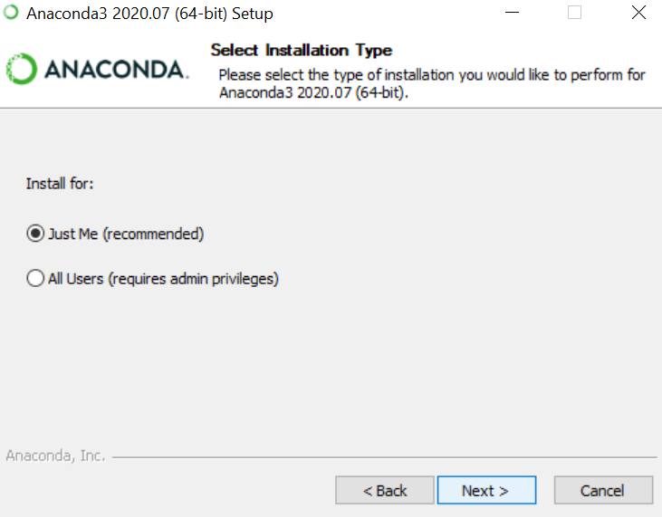
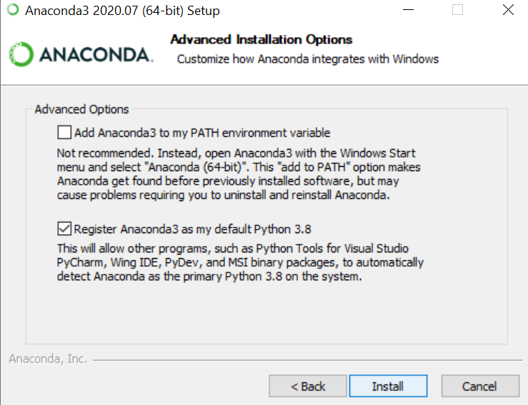
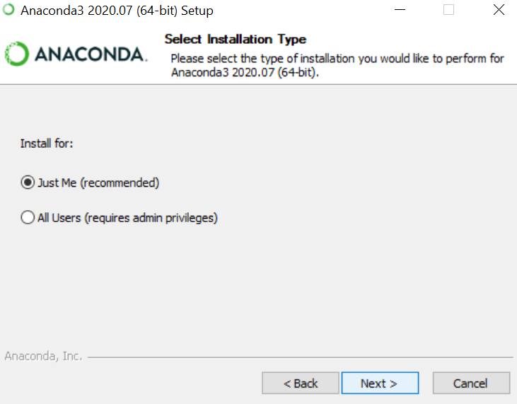
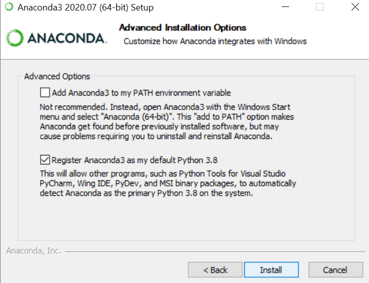
Jupyter Notebooks
After installing Anaconda, execute Jupyter Notebooks from start menu. Then, the dashboard of Jupyter notebooks should be opened on the browser.
We suggest you to keep open the dashboard all the time!
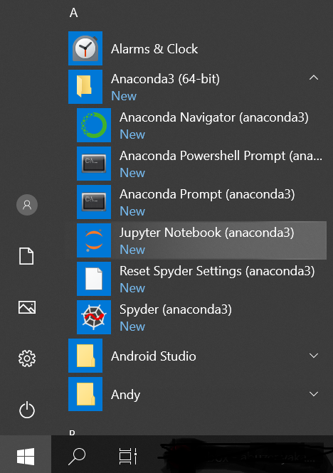
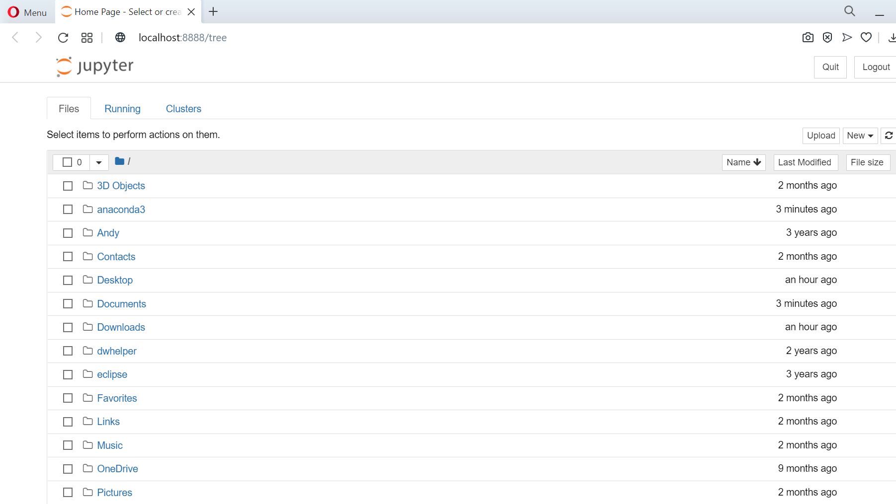
The notebooks you will work with should be accesible from the dashboard, e.g., put them under a sub-directory of Desktop, Documents, Downloads, etc.
In the following example, we downloaded our zip file under "Desktop/Bronze" and then extract the files there.
Always extract the zip files before accessing from jupyter notebooks!
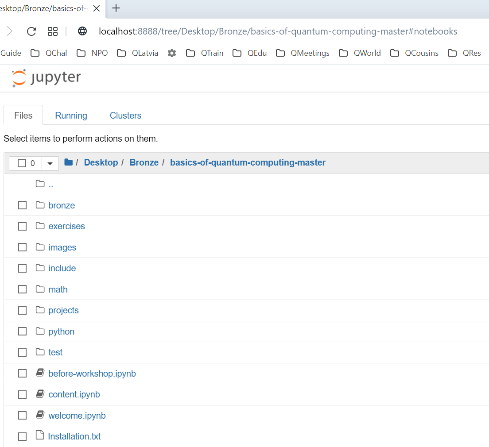
Install Qiskit
Click the notebook "before-workshop.ipynb".
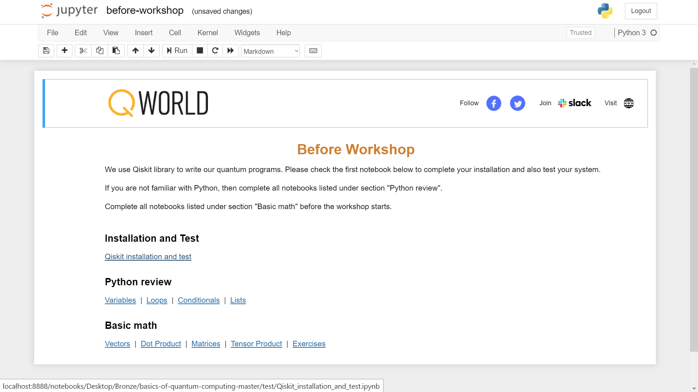
Click on "Qiskit installation and test".
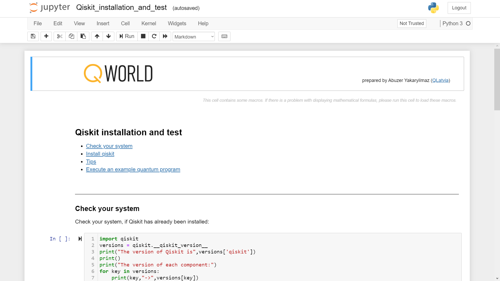
If you execute the first cell and Qiskit is not installed on your system, then you will get an error.
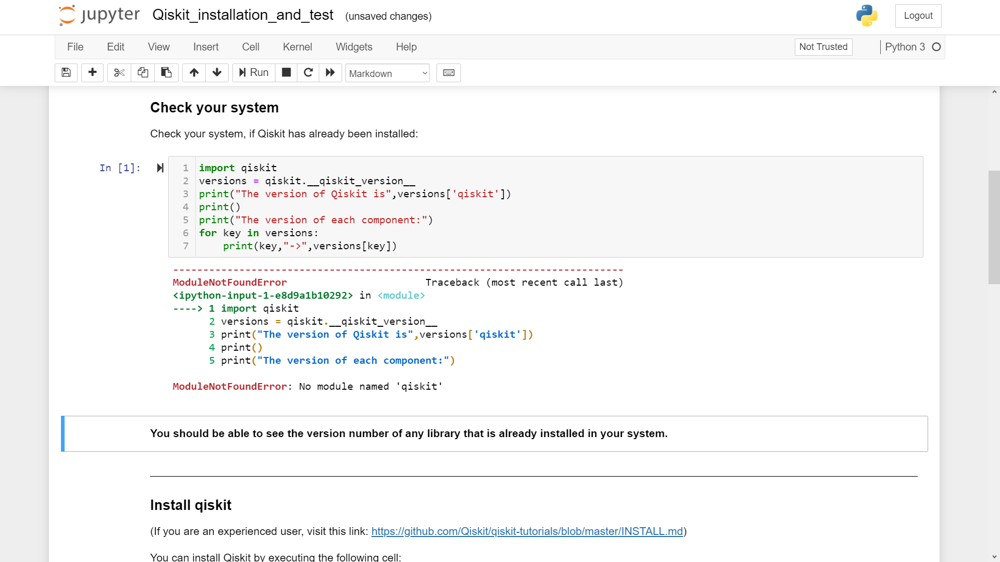
To install Qiskit, run the cell shown below.
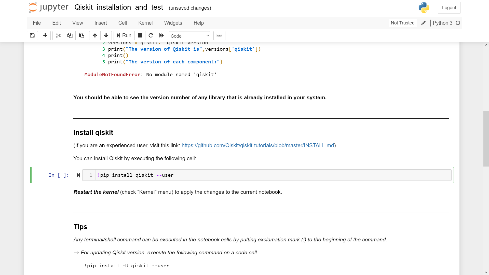
We did not recieve any error during the installation.
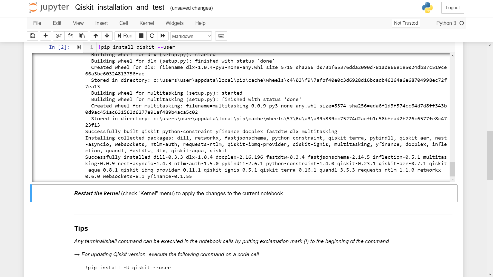
Restart the kernel before using Qiskit.
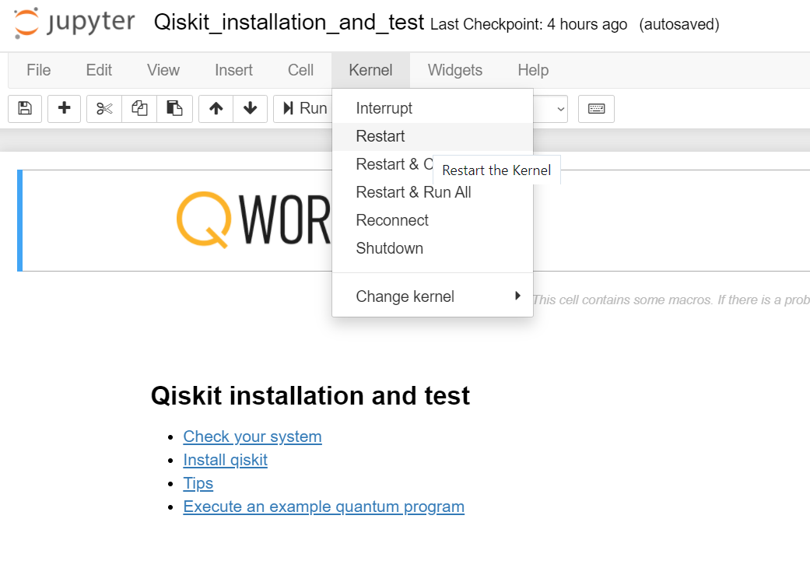
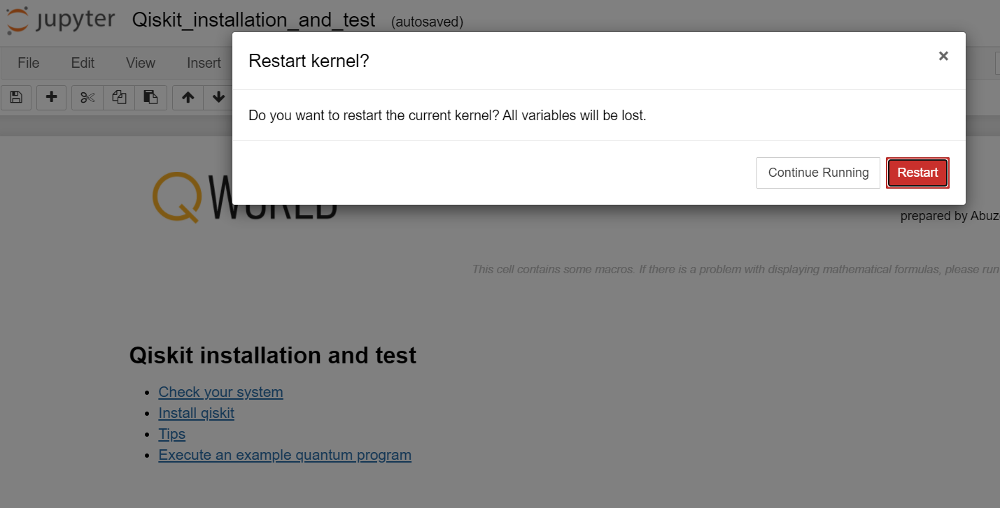
Test
It is time to test the system. Execute the cell shown below to create two entangled quantum bits.
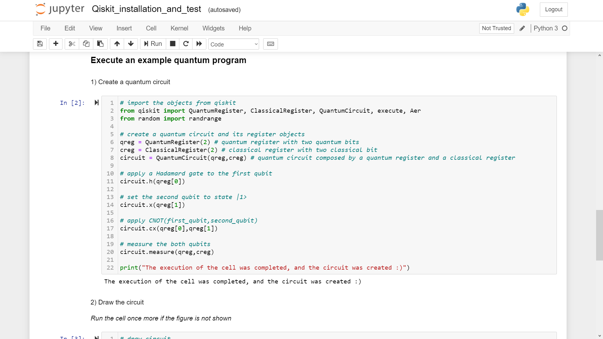
The second step is draw the circuit by executing the next cell. In our case, we got an error of a missing library.
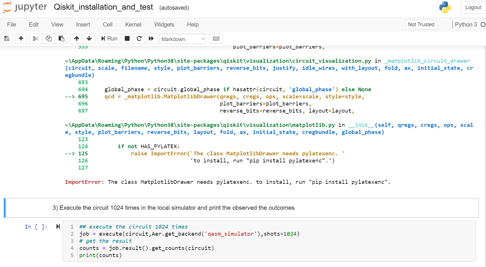
So, we inserted a new cell (by using the menu) and then install the missing library.
Do not forget to use "!" before the command.
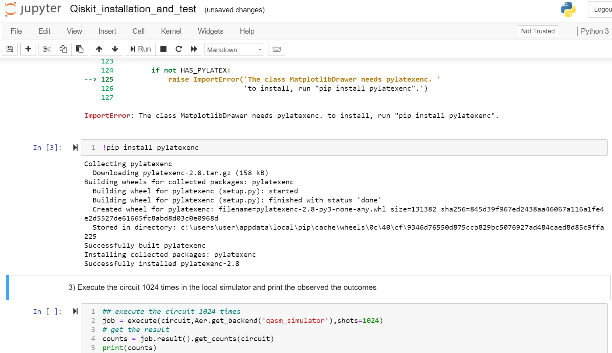
Then, we restarted the kernel and re-run the cell to draw the circuit.
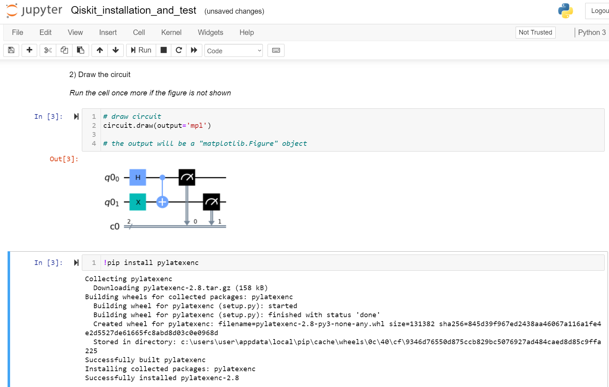
The last step is execute the circuit.
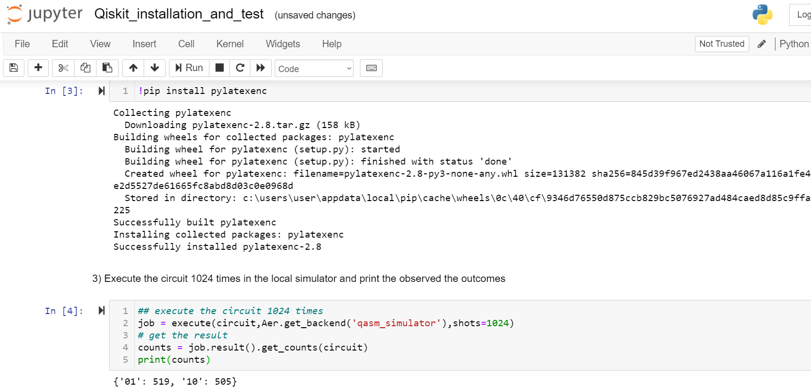
The installation is completed. Enjoy Bronze :)